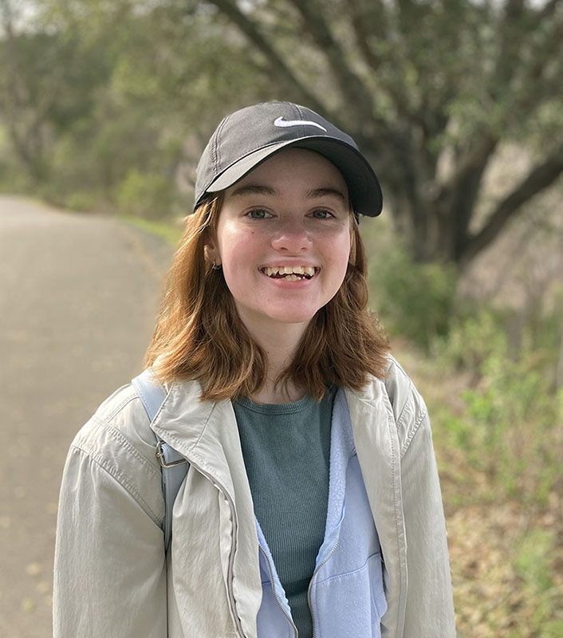

About

I'm in my third year of college at DVC. I will be transferring to a four year school after this year. I've always been interested in art and design and I'm considering pursing a career in design.
In the middle of 2020, during the pandemic, I picked up a new hobby. I started learning how to knit and crochet and it has since become one of my favorite pastimes. I mainly like to make sweaters and cardigans because I feel like it is the best way to show off my hard work.